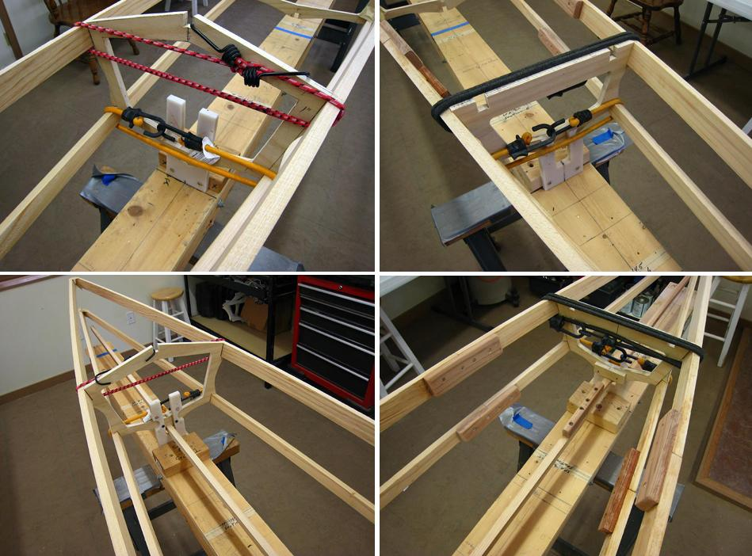

| Attaching Stringers | Menu Previous Page Next Page |
|

After all cross sections are properly positioned, attach the chines to cross sections 1 and 4 with shock cords. The keel is attached at this time by sliding it through the lower opening of the strongback stations and then pulling it up into the keel notches of all 4 cross sections. If the keel has a loose fit, insert shims under it as required.
|
|